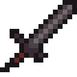
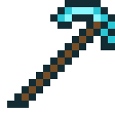
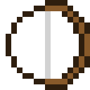
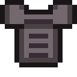
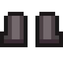
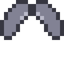

contenido principal
Catálogo
Armas y Herramientas
 Espada de diamante
Espada de diamante
- Durabilidad
- 1561 usos
- Daño
- 7
Espada de netherita

Espada de netherita
- Durabilidad
- 2031 usos
- Daño
- 8
Pico de diamante

Pico de diamante
- Durabilidad
- 1561 usos
- Daño
- 5
Arco

Arco
- Durabilidad
- 384 usos
- Daño
- 9
Armaduras

Pechera de netherita
- Durabilidad
- 592 usos
- Armadura
- +8 de proteccion
Botas de netherita

Botas de netherita
- Durabilidad
- 481 usos
- Armadura
- +3 de proteccion
Casco de tortuga
Casco de tortuga
- Durabilidad
- 275 usos
- Armadura
- +2 de proteccion
Élitros

Élitras
- Durabilidad
- 432 usos
- Armadura
- 0 de proteccion
Mobs
Creeper
- Vida
- 20 corazones
- Daño
- -43 corazones
Warden
Warden
- Vida
- 500 corazones
- Daño
- -30 corazones
Enderman
Enderman
- Vida
- 40 corazones
- Daño
- -7 corazones
Blaze
Blaze
- Vida
- 20 corazones
- Daño
- -6 corazones